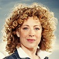
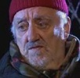
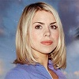

The Doctor usually travels with a companion or two. While he constantly insists that he is fine travelling alone, every time he does, he usually winds up very moody and rather dark. The companions keep the Doctor grounded and in touch with his softer side. Without them, he becomes a bit more fire and brimstone and less of a forgiving person.
Clara/Oswin: Jenna-Louise Coleman
Clara is the newest companion for the Eleventh Doctor. She has been in one episode (Asylum Of The Daleks). Not much is known about her since she has yet to truly take up the mantle of companion. — SPOILERS —For some reason, in the last season shown, Jenna-Louise Coleman is introduced as a character named Oswin, but she is only in the season for one episode.
Amy Pond: Karen Gillan
Rory Williams: Arthur Darvill

The Doctor first meets Amy Pond when she is a little girl and he has just regenerated. He comes back when she is older, and they have an adventure together, during which they Rory Williams, a nurse. Amy ends up running off with the Doctor at the end of the episode, and Rory joins up with them later in the season. They travel with the Doctor for about 30 episodes, during which phrases like “Come along Pond,” and “Rory the Roman” become commonplace and leave the Doctor at the end of season 6 in a bittersweet kind of way.
River Song: Alex Kingston

River Song is an interesting character. She is first encountered by the Tenth Doctor in Silence In The Library, but her significance is only revealed in later seasons. The relationship between River and the Doctor is mainly interesting because they always meet out of order, and each keeps a diary of what they have done in order to catch up with each other without giving away each other’s future. River only has sporadic appearances, but I feel she isn’t done with the show yet.
Craig Owens: James Corden
Craig only appears in two episodes, yet is of invaluable help to the Doctor. The main reason I include him is because he has, what I would consider to be, the common reaction to the Doctor randomly showing up on the doorstep. While most of the companions are willing to jump on board with the Doctor’s quirkiness, Craig is constantly wondering just what the hell the Doctor is up to. Anyone in their right mind wouldn't just go along with the Doctor, they would wonder why their new roommate is constructing odd things in their room and why he insists he can understand what a baby is saying.
Wilfred Mott: Bernard Cribbins

While Wilfred is only the companion in one episode, he is seen in multiple episodes as Donna Noble’s grandfather. We’ll get to her later. He is constantly helping Donna out and in the end, helps the Doctor when Donna can’t. While I am not mentioning the other companions who appeared in the specials from 2008-2010, — SPOILERS — Wilfred deserves a spot because of his repeat performances and being there at the end of David Tennant’s reign as the Tenth Doctor.
Captain Jack Harkness: John Barrowman
Jack Harkness first appears to the Ninth Doctor in the episode The Empty Child. He used to be a time agent and still has a vortex manipulator that allows him to travel through space and time. Jack likes to flirt with any beings he comes across in his travels, whether they be male or female, human or alien. The Doctor attributes this to humanities constant expansion through the galaxy, and the necessary lack of qualms that is required if humanity is to survive. For this reason, as well as his dashing good looks, he appears frequently in the Doctor Who series and was popular enough to get a spin-off of his own, Torchwood. (And he's good looking too).
Donna Noble: Catherine Tate
Donna is one of the two companions to have only interacted with the Tenth Doctor. She did not have any appearances before David Tennant and was unable to effectively reprise her role due to the circumstances surrounding her departure. While she was well liked by some, I personally found her somewhat annoying. Her constant whining and smarminess got on my nerves. She did eventually wind up growing on me, and the Doctor was rather lost after she left. Luckily, he had Wilf to help him through his troubles.
Martha Jones: Freema Agyeman
Martha was the other companion who only met the Tenth Doctor. Her spunk and positivity helped see her through even the toughest of times when the Doctor couldn’t be there to help out. She was always determined to help out and do the right thing, and went to work for the Unified Intelligence Taskforce (UNIT) after leaving the Doctor’s company. While with UNIT, she assisted the Doctor in dealing with various alien threats.
Mickey Smith: Noel Clarke
Mickey Smith was Rose Tyler’s boyfriend and tagged along with them on various adventures while Rose was the Doctor’s constant companion through two seasons. He wound up leaving after realizing there are wonders in the everyday world, grander than the wonders the Doctor had to offer.
Rose Tyler: Billie Piper

Rose Tyler was the only constant companion the Ninth Doctor had. Mickey Smith joined in now and then, but was only in two episodes before the Doctor regenerated. Jack Harkness also showed up during this period, but Rose was always there. Despite multiple episodes where it seemed it was the end of the Doctor and Rose relationship, there was always another meeting. It was only upon getting extraordinary closure did the Doctor say goodbye to Rose for the final time. For the longest time, Rose was my favorite companion, but Amy and Rory have claimed that spot and moved Rose down to second.